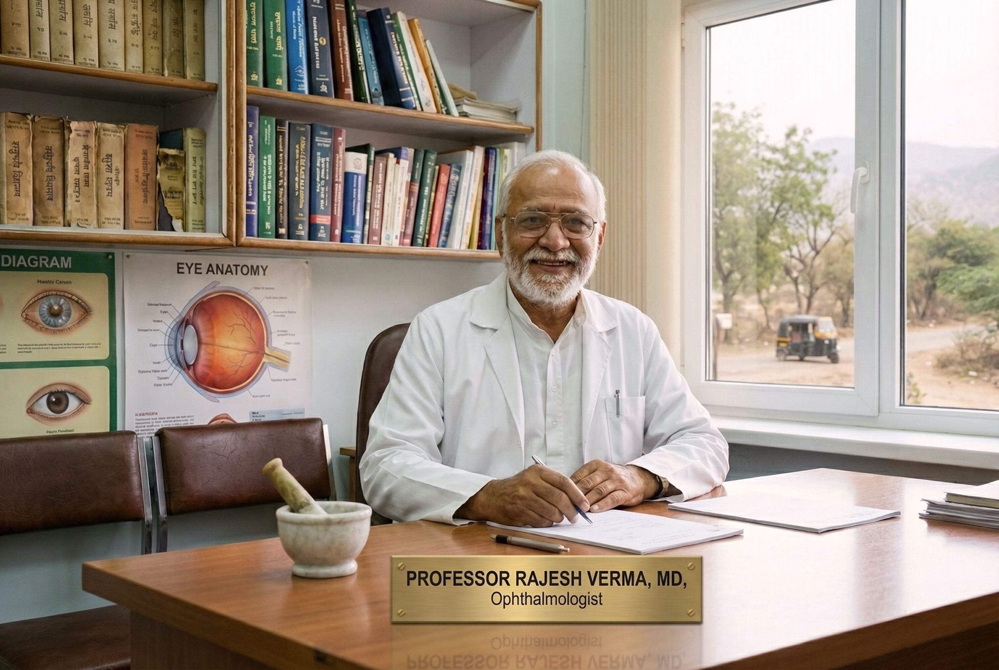

स्वास्थ्य / नेत्र विज्ञान / आयुर्वेद और विज्ञान / विशेषज्ञ साक्षात्कार

12.03.2026
डॉ. राजेश वर्मा के साथ साक्षात्कार
उन्होंने नेत्र सूक्ष्म शल्य चिकित्सा के लिए 45 वर्ष समर्पित किए हैं और बताते हैं कि चश्मा एक "सहारा" क्यों है जो
इलाज नहीं करता है, और कैसे प्राचीन भारतीय ज्ञान और प्रौद्योगिकी के संयोजन ने दृष्टि बहाली के दृष्टिकोण को बदल
दिया है।